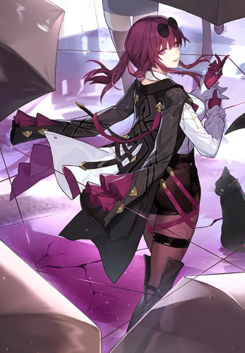

Home
Sobre a KAFKA
Kafka a maior aplicadora
de DOT do star rail!
Rank SS
Membro dos Caçadores de Stellaron. Uma beleza calma, centrada e profissional. Usou o encantamento do Sussuro de Espírito para preparar Desbravador/Desbravadora para absorver o Stellaron. Gosta de fazer compras e organizar sua coleção de casacos.
github
Times
linkedin

 github
github
 Times
Times
 linkedin
linkedin